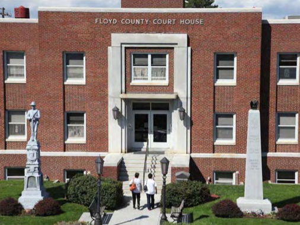
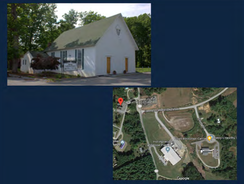

First County courthouse built in 1834 on land donated by... drumroll, the Phlegar and Tice families.

By the 1790’s, substantial Europeans—English, German, French, Scots and Irish settled what’s now FC. In 1791, the German Lutherans established the 2nd congregation everhere—just across the Road from us. First build @1809. By1831, FC part of present day Montgomery County, but people here wanted to chart their own direction.